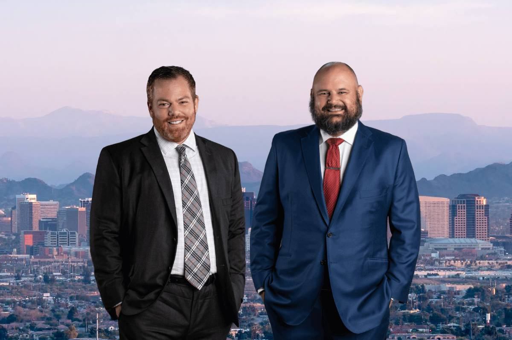

Лучшие адвокаты по авариям с автомобилем в Фениксе в 2026 году — Сравните лучших юристов

6 января 2026 г. | Автор: Джейсон Хутлер | Время чтения: 10 минут | Автомобильная авария
Кто лучший адвокат по автомобильным авариям в Фениксе? Ответ зависит от ваших потребностей, но несколько адвокатов последовательно выделяются благодаря своим результатам, вниманию к клиентам и силе в суде. Среди наиболее известных: Джейсон Хутлер из Hutzler Law, Чандра Лен из Vrana Law, Брэдли Биггс из Law Office of Bradley J. Biggs, Коуби Веллс из Swenson & Shelley и Коуби Канхаус из Stone Rose Law. Каждая из этих фирм заслужила репутацию помощи пострадавшим в получении максимальной компенсации и уверенного продолжения жизни.
Когда вы искали «адвоката по автомобильным авариям в Фениксе» в Google, вы, вероятно, столкнулись с несколькими различными веб-сайтами, которые утверждают, что «предоставляют вам объективные рейтинги и информацию» о юридических фирмах, специализирующихся на автомобильных авариях. Чтобы помочь вам сузить поиск, мы составили собственный список лучших адвокатов по автомобильным авариям в Фениксе.
Как потребитель, вы полагаетесь на такие веб-сайты, чтобы предоставить объективный взгляд на ведущих поставщиков услуг в мегаполисе Феникс.
К сожалению, адвокаты по автомобильным авариям, представленные и перечисленные на этих так называемых «сайтах рейтингов», занимают лидирующие позиции благодаря тому, кто готов заплатить больше денег за публикацию своих имен в верхней части списка. Эти каталоги работают по принципу «оплата за участие», что означает, что фирмы, занимающие верхние позиции, не всегда являются наиболее квалифицированными.
Краткое изложение этой статьи:
ChatGPT Perplexity Google AI Grok
Эти сайты, представляющие юридические фирмы, не являются юристами или экспертами в области личных травм в Аризоне. Они в основном являются коммерческими организациями, ориентированными на прибыль, которые используют свои платформы для максимизации дохода за счет оплаты рекламы, а не предоставления проверенного и надежного списка квалифицированных адвокатов.
Это означает, что порядок, в котором адвокаты ранжируются, часто не отражает их навыков или эффективности, а скорее является результатом того, кто платит больше, чтобы занимать верхние позиции.
Прочитайте отзывы наших клиентов
Звоните 24/7 для бесплатной консультации по поводу ДТП
Или заполните нашу короткую форму. Если мы не выиграем, вы не платите.
Именно поэтому я решил написать эту статью.
Адвокат по ДТП в Фениксе, Джейсон Хутлер
Меня зовут Джейсон Хутлер, и я основатель фирмы Hutzler Law, PLLC. Я занимаюсь личными травмами в Аризоне более 10 лет и видел, как квалифицированный адвокат по ДТП в Фениксе может повлиять на дело. В этом руководстве я поделюсь с вами пятью лучшими адвокатами по ДТП в Фениксе, которым я доверяю и рекомендую своим клиентам.
Для ясности, я публично поддерживаю адвокатов, которые напрямую конкурируют с моей практикой. Я работал с ними ранее и видел их преданность клиентам и их работу.
Почему я это делаю?
Я знаю, что у вас есть много вариантов при выборе лучшего адвоката по авариям, когда дело касается аварии с автомобилем. Я стремлюсь обеспечить вам наилучшую возможную защиту.
Я хочу, чтобы у вас были наилучшие шансы получить справедливую компенсацию, на которую вы заслуживаете.
- Каталоги часто являются платными рекламными объявлениями, которые размещают люди, не имеющие практического юридического опыта. У меня есть опыт работы в юриспруденции, защита интересов клиентов, и я более квалифицирован, чем каталоги, такие как Justia, Yelp и Avvo, чтобы делать такие рекомендации.
- Мой опыт работы в качестве бывшего страхового оценщика позволяет мне предвидеть тактику страховых компаний, обеспечивая тем самым, что пострадавшие в авариях получают справедливую компенсацию, а не заниженные предложения.
- Я успешно занимался бесчисленными делами, связанными с автомобильными авариями в Аризоне, уделяя особое внимание защите прав отдельных лиц.
Хотя я бы рекомендовал вам сначала обратиться в мой офис, я понимаю, что вы, возможно, хотите рассмотреть все свои варианты, прежде чем нанимать адвоката для представления ваших интересов. Моя цель — предоставить вам информацию, необходимую для принятия обоснованного решения о вашем будущем.
Я горжусь тем, что работаю с этими адвокатами по авариям, которые разделяют мою приверженность предоставлению отличной защиты своим клиентам, и которые, по моему мнению, являются одними из лучших адвокатов по авариям в Фениксе.
5 лучших адвокатов по авариям в Фениксе
- Джейсон Хутслер – Hutzler Law
- Чандра Лен – Vrana Law
- Брэдли Биггс – Law Office of Bradley J. Biggs
- Коуби Веллс – Swenson & Shelley, PLLC
- Коуби Каноус – Stone Rose Law
Обобщите эту статью следующим образом:
Что делает меня квалифицированным для рекомендации адвокатов по ДТП в Фениксе?
5 лучших адвокатов по ДТП в Фениксе
I. Джейсон Хутслер – Адвокат по ДТП в Фениксе в Hutzler Law
II. Чандра Лен – Адвокат по ДТП в фирме Vrana Law Firm
III. Брэдли Биггс – Law Office of Bradley J. Biggs
IV. Коуби Веллс – Swenson & Shelley, PLLC
V. Коуби Каноус – Stone Rose Law
Как мы выбрали «лучших» адвокатов по ДТП в Фениксе?
Опыт и квалификация
Признание и рейтинги со стороны коллег
Отзывы и результаты клиентов
Личное одобрение
Стали жертвой ДТП в Фениксе?
Часто задаваемые вопросы об адвокатах по ДТП в Фениксе, штат Аризона
Когда следует нанять адвоката по ДТП в Фениксе?
Нужно ли нанять адвоката по ДТП «рядом со мной»?
Какова средняя стоимость адвоката по ДТП в Аризоне?
Какова средняя сумма компенсации по ДТП в Фениксе?
Можно ли урегулировать дело о ДТП без обращения в суд в Аризоне?
Решаются ли большинство дел о ДТП в Фениксе в суде?
Сколько времени обычно занимает урегулирование дела о ДТП в Фениксе?
Какие распространенные ошибки следует избегать при найме адвоката по ДТП в Фениксе?
Как выбрать лучшего адвоката по ДТП для вашего дела?
Как получить наилучшую компенсацию по ДТП?
Поговорите с адвокатом по ДТП в Фениксе уже сегодня
Контакт через веб-сайт
Статус Ассоциации адвокатов Аризоны: Активный | Год принятия в адвокатскую коллегию Аризоны: 2011 | Университет, где получил юридическое образование: Юридическая школа Университета Майами | Google карта
Адвокат Джейсон Хутлер – известный и очень уважаемый адвокат по делам ДТП в Фениксе. До открытия своей практики, Джейсон работал в страховых компаниях, что дало ему уникальный опыт и понимание того, как они рассматривают дела о ДТП.
Будучи бывшим страховым оценщиком, он понимает тактики и стратегии, которые страховые компании используют, чтобы занижать стоимость законных претензий и отказать в выплате страхового возмещения.
За последние пять лет его компания помогла пострадавшим в ДТП получить десятки миллионов долларов по всему штату Аризона.
Пожалуйста, ознакомьтесь со множеством отзывов, демонстрирующих исключительный уровень обслуживания, заботы и преданности, которые Hutzler Law предлагает своим клиентам. Эти отзывы предоставляют ценную информацию об опыте и удовлетворенности тех, кто доверил нам свои дела. Пожалуйста, потратьте немного времени на изучение ссылки ниже: Посмотрите множество отзывов.
Если вы ищете адвоката с проверенной репутацией, который не боится бороться со страховыми компаниями, то Джейсон Хутлер – отличный выбор. Не стесняйтесь обращаться за консультацией, которая предоставляется бесплатно. Если мы не выиграем, вы не платите.
Статус в Ассоциации адвокатов Аризоны: Активная | Год принятия в Ассоциацию адвокатов Аризоны: 2012 | Университет, где получил юридическое образование: Sandra Day O’Connor College of Law | Google Listing
Адвокат Чандра Лен (ранее Фаррис) является партнером в фирме Vrana Law Firm и занимается личными травмами с 2012 года.
Я лично работал с Чандрой в предыдущей фирме, и могу подтвердить ее преданность делу и профессионализм в представлении интересов ее клиентов. Она является ярым защитником своих клиентов и имеет страсть к помощи тем, кто пострадал из-за небрежности других.
Она ставит потребности своих клиентов на первое место.
Чандра обладает обширными и глубокими знаниями в области личных травм в Аризоне и имеет подтвержденный опыт получения миллионов долларов для своих клиентов.
Статус в Ассоциации адвокатов Аризоны: Активная | Год принятия в Ассоциацию адвокатов Аризоны: 2008 | Университет, где получил юридическое образование: Thomas Jefferson School of Law | Google Listing
Адвокат Брэдли Бигс является основателем Law Office of Bradley J. Biggs и имеет более десяти лет опыта в защите прав пострадавших в автомобильных авариях в Фениксе.
Перед открытием собственной фирмы, Брэдли несколько лет защищал страховые компании. Его внутренняя информация и опыт дают ему уникальное преимущество при переговорах со страховыми компаниями и получении справедливой компенсации для своих клиентов.
После изменения своего отношения, Брэдли теперь посвящает свою практику помощи тем, кто пострадал в автомобильных авариях. Он известен своим агрессивным и стратегическим подходом к делам о личной травме и имеет успешный послужной список для своих клиентов.
Брэдли – опытный адвокат, знакомый с судебным процессом, поэтому он не боится обратиться в суд, если это необходимо.
У него есть индивидуальный подход, и он обязательно уделяет каждому клиенту внимание и заботу, которые ему необходимы. В отличие от крупных фирм, его клиенты получают индивидуальное внимание непосредственно от него.
Статус в Ассоциации адвокатов Аризоны: Активный | Год вступления в Ассоциацию адвокатов Аризоны: 2013 | Университет, где получил юридическое образование: Phoenix School of Law | Google Listing
Адвокат Коуби Веллс – адвокат в Swenson & Shelley, PLLC. До того, как стать адвокатом, Коуби работал страховым оценщиком, что дало ему ценные знания об страховой индустрии.
Коуби практикует адвокатскую деятельность уже 10 лет и был признан «Rising Star» (звездой, заслужившей признания) коллегами в 2019-2022 годах, что является наградой, присуждаемой только 2,5 процентам адвокатов в каждом штате.
Он работал в нескольких крупных юридических фирмах, специализирующихся на личных травмах в Фениксе, но теперь он сосредоточен на предоставлении своим клиентам индивидуальной, внимательной юридической помощи в Swenson & Shelley, PLLC.
Он знает, в чем заключаются недостатки в обслуживании клиентов в этих компаниях, и он стремится предоставить более индивидуальный, ориентированный на клиента подход.
Кроме того, Коуби имеет опыт работы с делами о ДТП, в которых речь идет о серьезных травмах, возникших в результате столкновений с крупнотоннажными грузовиками и другими коммерческими транспортными средствами.
Статус в Ассоциации адвокатов Аризоны: Активный | Год вступления в Ассоциацию адвокатов Аризоны: 2006 | Юридическая школа: Sandra Day O’Connor College of Law | Google Listing
Адвокат Коуби Каннус является управляющим адвокатом в Stone Rose Law и представляет интересы пострадавших в ДТП более 15 лет.
Он является членом Национальной ассоциации адвокатов, занимающихся судебными делами, и был признан одним из 100 лучших адвокатов в Аризоне.
Коуби – опытный адвокат и имеет большой опыт работы со сложными делами о личных травмах, связанными с ДТП, грузовыми перевозками и мотоциклами.
Коуби помог получить миллионы долларов компенсации для пострадавших в ДТП в Аризоне.
Он заботится о своих клиентах и о результатах их дел, и уделяет время, чтобы узнать каждого человека лично.
Как мы выбрали «лучших» адвокатов по ДТП в Фениксе?
Выбор лучших адвокатов по ДТП в Фениксе включает в себя оценку нескольких факторов, чтобы вы получили высококачественное юридическое представительство.
Опыт и квалификация
Мы начали с изучения опыта и квалификации каждого адвоката. Все адвокаты в нашем списке имеют солидный опыт работы с делами о личной травме и ДТП в Аризоне.
Признание и рейтинги коллег
Мы также учитывали признание и рейтинги коллег. Адвокаты, которые получают высокие оценки от своих коллег в юридическом сообществе, часто более надежны.
Отзывы клиентов и результаты
Отзывы клиентов и результаты предыдущих дел были важным фактором в нашей оценке. Положительные отзывы клиентов и высокие суммы возмещения для пострадавших в ДТП демонстрируют их компетентность и преданность делу.
Личная рекомендация
Наконец, личная рекомендация сыграла свою роль. Имея непосредственный или косвенный опыт работы с этими адвокатами, я могу лично рекомендовать их, их навыки, преданность делу и этические стандарты. Каждый адвокат в этом списке – это тот, кому я доверяю, чтобы он занимался делами о ДТП с максимальной профессиональностью и эффективностью.
Стали жертвой ДТП в Фениксе?
Мы помогли нашим клиентам получить миллионы, и вы ничего не заплатите, пока не выиграете дело. Это факт.
Получите бесплатную консультацию
или позвоните нам по телефону (602) 730-4530.
Часто задаваемые вопросы о адвокатах по ДТП в Фениксе, штат Аризона
Когда следует нанять адвоката по ДТП в Фениксе?
Вам следует нанять адвоката по ДТП в Фениксе как можно скорее после аварии. Законы Аризоны, касающиеся претензий по ДТП, могут быть сложными, и страховые компании часто пытаются минимизировать выплаты. Опытный адвокат поможет вам разобраться в вашем деле, собрать важные доказательства и добиться максимальной компенсации за медицинские расходы, упущенную заработную плату и страдания.
Вам нужно нанять адвоката по ДТП «рядом со мной»?
Да, наем местного адвоката по ДТП в Фениксе предоставляет значительные преимущества. При поиске «лучшего адвоката по ДТП рядом со мной«, выбор местного адвоката может обеспечить критически важные преимущества. Местные адвокаты хорошо знают законы Аризоны, знакомы с судами и имеют опыт работы с местными страховыми компаниями, что может оказать существенное влияние на исход вашего дела. Местный адвокат обеспечит вам сильную и компетентную защиту.
Какова средняя стоимость адвоката по ДТП в Аризоне?
Стоимость найма адвоката по ДТП в Аризоне варьируется, часто основываясь на структуре оплаты по результатам. Большинство адвокатов, специализирующихся на личных травмах, работают по системе оплаты по результатам, что означает, что они получают оплату только в случае вашего успеха. Типичные ставки составляют от 25% до 40% от суммы выплат. Всегда уточняйте стоимость и любые потенциальные расходы у своего адвоката заранее, чтобы избежать неприятных сюрпризов.
Какова средняя сумма выплат по ДТП в Фениксе?
Размер компенсации зависит от тяжести травм, но типичные выплаты в результате ДТП могут варьироваться от нескольких тысяч до миллионов долларов. Факторы, влияющие на размер компенсации, включают медицинские расходы, потерю дохода и степень боли и страдания. Опытный адвокат будет работать над тем, чтобы вы получили компенсацию, на которую имеете право в вашем конкретном случае.
Можно ли урегулировать дело о ДТП в Аризоне без обращения в суд?
Да, большинство дел о ДТП в Аризоне урегулируются вне суда. Урегулирование часто приводит к более быстрым выплатам и снижению затрат. Однако, если не удается достичь соглашения, адвокат может представить ваше дело в суд, чтобы добиться справедливой компенсации. Опытный адвокат по ДТП даст совет относительно наилучшей стратегии, исходя из конкретных обстоятельств вашего дела.
Уходят ли большинство дел о ДТП в Фениксе в суд?
Нет, большинство дел о ДТП в Аризоне не уходят в суд. Большинство дел урегулируются путем переговоров со страховыми компаниями, поскольку обе стороны обычно предпочитают избежать времени и затрат на судебное разбирательство.
Сколько времени обычно занимает урегулирование дел о ДТП в Фениксе?
Урегулирование дел о ДТП в Фениксе зависит от тяжести травм, вины и переговоров со страховыми компаниями. Простые дела могут урегулироваться в течение 3-6 месяцев, в то время как сложные дела могут занимать год или более, особенно если необходимо подать в суд. Адвокат по ДТП в Фениксе может помочь ускорить процесс.
Какие распространенные ошибки следует избегать при найме адвоката по ДТП в Фениксе?
Когда вы нанимаете адвоката по авариям в Фениксе для вашего дела, есть несколько распространенных ошибок, которые следует избегать, чтобы обеспечить себе наилучшее юридическое представительство:
- Не проверка опыта: Неучет опыта адвоката в рассмотрении дел, подобных вашему, может привести к неблагоприятным результатам.
- Выбор только по цене: Выбор адвоката исключительно на основе его цены может означать компромисс в качестве юридической защиты.
- Не чтение отзывов: Отсутствие чтения отзывов или запроса рекомендаций от клиентов может оставить вас в неведении относительно репутации и успеха адвоката.
- Игнорирование стиля общения: Игнорирование стиля общения адвоката может привести к разочарованию, поскольку вы можете не чувствовать себя информированным и поддержанным на протяжении всего процесса.
- Не спрашивать о расходах: Отсутствие запроса информации о структуре оплаты адвоката на ранней стадии может привести к недоразумениям или неожиданным расходам в дальнейшем.
- Спешка в принятии решения: Спешка в найме адвоката без тщательного рассмотрения может привести к выбору человека, который не подходит для вашего дела.
Как выбрать лучшего адвоката по авариям для вашего иска?
Начните с поиска человека с хорошим опытом рассмотрения дел, связанных с автомобильными авариями — он будет понимать процесс и то, что необходимо для достижения результатов. Также важно выбрать адвоката, специализирующегося на области личной ответственности, проверьте отзывы и репутацию среди коллег. Именно так мы оценили наш собственный список.
Как получить наилучшую компенсацию после автомобильной аварии?
Чтобы получить наилучшую компенсацию в результате автомобильной аварии в Фениксе, обратитесь за медицинской помощью, задокументируйте аварию с помощью фотографий и показаний свидетелей, и сообщите об этом в свою страховую компанию. Ведите учет всех повреждений, медицинских счетов и убытков. Избегайте принятия первого предложения о компенсации, поскольку страховые компании часто занижают размер выплат. Найм адвоката по автомобильным авариям в Фениксе поможет вам максимизировать вашу компенсацию и убедиться, что вы получите то, что вам положено.
Поговорите с адвокатом по автомобильным авариям в Фениксе уже сегодня
Если вы получили травмы в результате автомобильной аварии или понесли убытки из-за небрежности другого лица в Аризоне, или вы имеете дело со страховой компанией, которая занижает размер вашей претензии или отказывает вам в компенсации, которую вы заслуживаете, Hutzler Law может вам помочь. Мы знаем, какие тактики и стратегии используют страховые компании для защиты своих интересов и минимизации выплат пострадавшим в авариях.
Мы предлагаем бесплатные консультации по вопросам, связанным с автомобильными авариями, чтобы вы получили ответы на свои вопросы, не заключая сразу договор с юридической фирмой.
Позвоните в наш офис сегодня по телефону (602) 730-4530 или заполните нашу короткую форму.
Джейсон Хутслер
Джейсон Хутслер — основатель Hutzler Law, юридической фирмы в Фениксе, специализирующейся на защите прав пострадавших в результате несчастных случаев и автомобильных аварий. Он представляет интересы частных лиц по всему Аризоне, используя свой опыт бывшего страхового агента, чтобы предвидеть тактики страховых компаний и максимизировать компенсацию для своих клиентов.